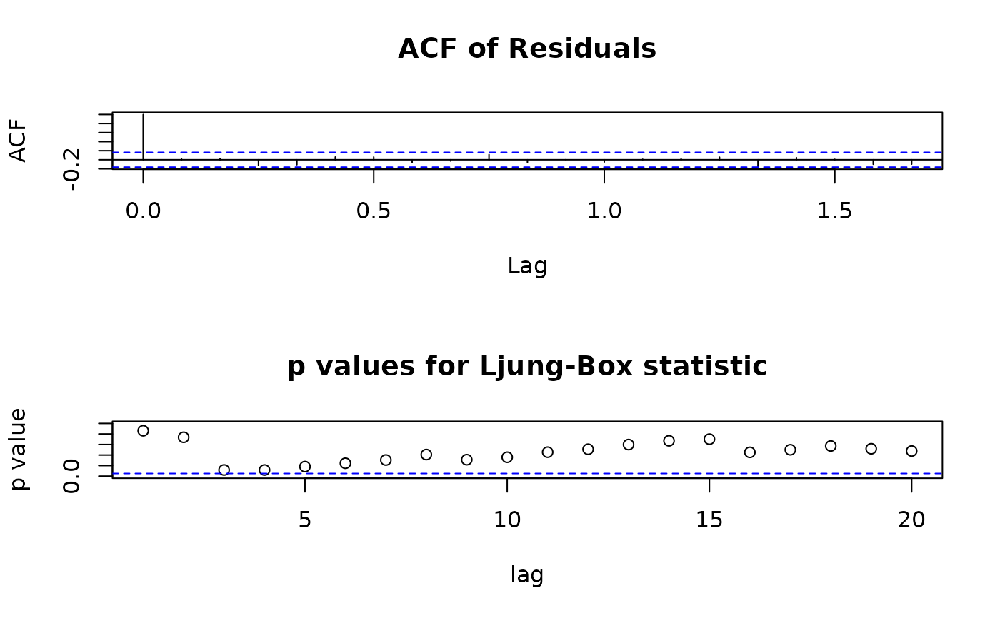
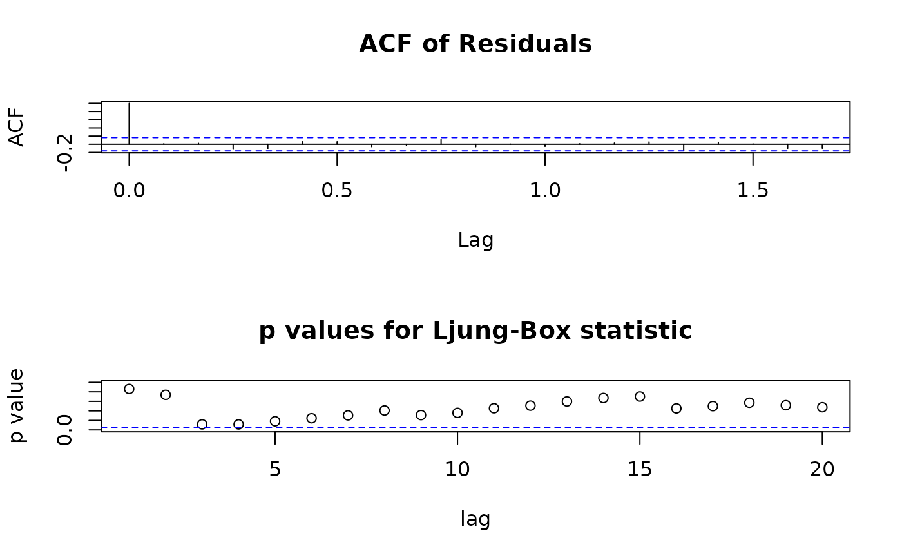

Diagnostic Plots for fitted seasonal ARIMA models
tsdiag.Sarima.RdProduce diagnostics for fitted seasonal ARIMA models. The method offers several portmanteau tests (including Ljung-Box, Li-McLeod and Box-Pierce), plots of autocorrelations and partial autocorrelations of the residuals, ability to control which graphs are produced (including interactively), as well as their layout.
Usage
# S3 method for Sarima
tsdiag(object, gof.lag = NULL, ask = FALSE, ..., plot = 1:3, layout = NULL)
# if 'object' is not produced by sarima(), use the full name,
# 'tsdiag.Sarima()', in the call. The arguments are the same.Arguments
- object
-
fitted (seasonal) ARIMA model. currently the output of
sarima,stats::arimaor compatible (e.g.,forecast::Arimaandforecast::auto.arima). Ifobjectis not fromsarima, use the full name,tsdiag.Sarima, of the method when calling it, see the examples. - gof.lag
maximal lag for portmanteau tests.
- ask
if
TRUEpresent a menu of available plots, see Details.- ...
not used.
- plot
if
TRUEall available plots; a vector of positive integers specifies a subset of the available plots.- layout
a list with arguments for
graphics::layoutfor the plots. The default is as for the ARIMA method ofstats::tsdiag.
Details
Compute and graph diagnostics for seasonal ARIMA models. For objects
of class "Sarima" (produced by sarima) just call the
generic, tsdiag. The method can be called also directly on the output
from base R's arima() with tsdiag.Sarima() or
sarima::tsdiag.Sarima().
The method offers several portmanteau tests (including Ljung-Box, Li-McLeod and Box-Pierce), plots of autocorrelations and partial autocorrelations of the residuals, ability to control which graphs are produced (including interactively), as well as their layout.
The method always makes a correction of the degrees of freedom of the
portmanteau tests (roughly, subtracting the number of estimated ARMA
parameters). Note that stats::tsdiag doesn't do that.
plot can be TRUE to ask for all plots or a vector of
positive integers specifying which plots to consider. Currently the
following options are available:
| 1 | residuals |
| 2 | acf of residuals |
| 3 | p values for Ljung-Box statistic |
| 4 | p values for Li-McLeod statistic |
| 5 | p values for Box-Pierce statistic |
| 6 | pacf of residuals |
plot = 1:3, which produces a plot similar to the
one from stats::tsdiag (but with adjusted d.f., see above).
If plot is TRUE, you probably need also ask = TRUE.
If argument plot is of length two the graphics window is split
into 2 equal subwindows. Argument layout can still be used to
change this. If argument plot is of length one the graphics
window is not split at all.
In interactive sessions, if the number of requested graphs (as
specified by argument plot) is larger than the number of graphs
specified by the layout (by default 3), the function makes the first
graph and then presents a menu of the requested plots.
Argument layout can be used to change the layout of the plot,
for example to put two graphs per plot, see the examples. Currently it
should be a list of arguments for layout, see ?layout.
Don't call layout youself, as that will change the graphics
device prematurely.
The computed results are returned (invisibly). This is another
difference from stats::tsdiag which doesn't return them.
Value
a list with components:
- residuals
residuals
- LjungBox
Ljung box test
- LiMcLeod
LiMcLeod test
- BoxPierce
BoxPierce test
Only components that are actually computed are included, the rest are NULL or absent.
Examples
ap.baseA <- sarima(log(AirPassengers) ~
0 | ma(1, c(-0.3)) + sma(12,1, c(-0.1)) + i(1) + si(12,1),
ss.method = "base")
tsdiag(ap.baseA)
 ## apply the method on objects from arima()
ap.arima <- arima(log(AirPassengers), order = c(0,1,1), seasonal = c(0,1,1))
tsdiag.Sarima(ap.arima)
## apply the method on objects from arima()
ap.arima <- arima(log(AirPassengers), order = c(0,1,1), seasonal = c(0,1,1))
tsdiag.Sarima(ap.arima)
 ## use Li-McLeod test instead of Ljung-Box
tsdiag.Sarima(ap.arima, plot = c(1:2,4))
## use Li-McLeod test instead of Ljung-Box
tsdiag.Sarima(ap.arima, plot = c(1:2,4))
 ## call R's tsdiag method, for comparison:
tsdiag(ap.arima, plot = c(1:2,4))
## call R's tsdiag method, for comparison:
tsdiag(ap.arima, plot = c(1:2,4))
 ## plot only acf an p-values
tsdiag.Sarima(ap.arima, plot = c(2:3), layout = list(matrix(1:2, nrow = 2)))
## plot only acf an p-values
tsd <- tsdiag.Sarima(ap.arima, plot = c(2:3), layout = list(matrix(1:2, nrow = 2)))

## the results can be used for further calculations:
head(tsd$LjungBox$test, 4)
#> ChiSq DF pvalue
#> [1,] 0.03065128 1 0.8610207
#> [2,] 0.11260997 1 0.7371921
#> [3,] 2.45802081 1 0.1169260
#> [4,] 4.30491459 2 0.1161983
## plot resid, acf, and p-values, leaving half the space for residuals
# tsdiag.Sarima(ap.arima, plot = c(1:3), layout = list(matrix(1:3, nrow = 3),
# heights = c(1,2,2)))
## plot only acf an p-values
tsdiag.Sarima(ap.arima, plot = c(2:3), layout = list(matrix(1:2, nrow = 2)))
## plot only acf an p-values
tsd <- tsdiag.Sarima(ap.arima, plot = c(2:3), layout = list(matrix(1:2, nrow = 2)))

## the results can be used for further calculations:
head(tsd$LjungBox$test, 4)
#> ChiSq DF pvalue
#> [1,] 0.03065128 1 0.8610207
#> [2,] 0.11260997 1 0.7371921
#> [3,] 2.45802081 1 0.1169260
#> [4,] 4.30491459 2 0.1161983
## plot resid, acf, and p-values, leaving half the space for residuals
# tsdiag.Sarima(ap.arima, plot = c(1:3), layout = list(matrix(1:3, nrow = 3),
# heights = c(1,2,2)))